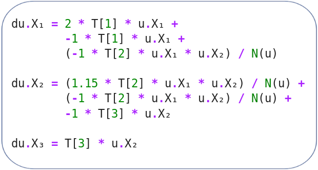
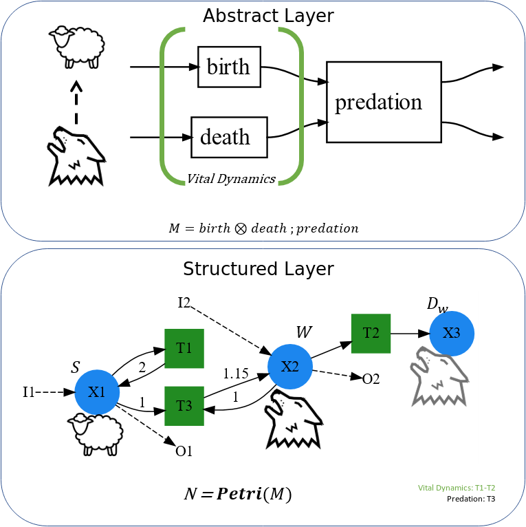
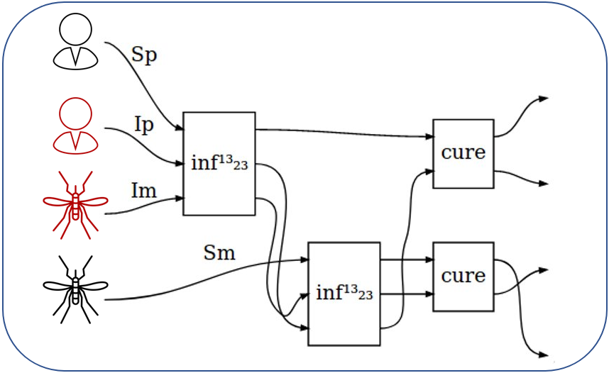
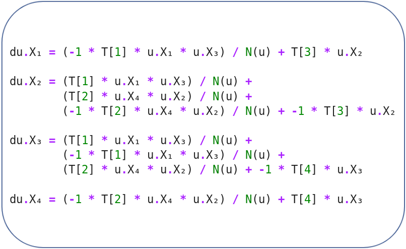
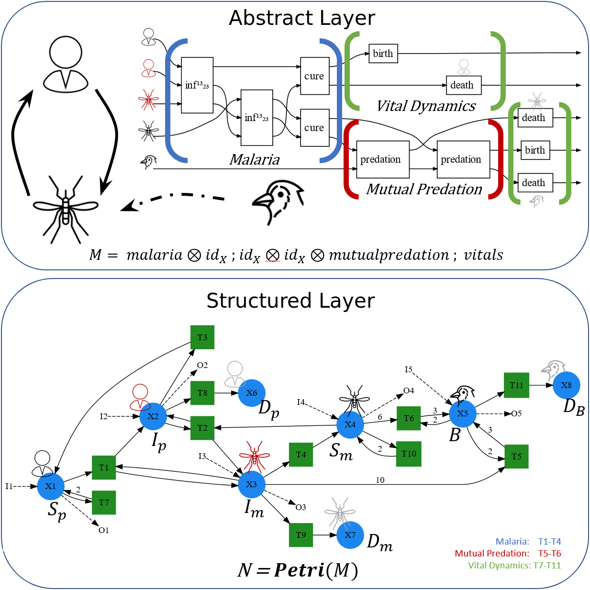
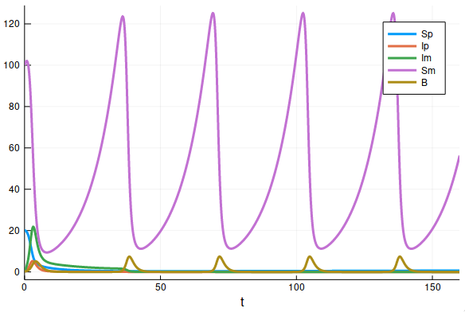
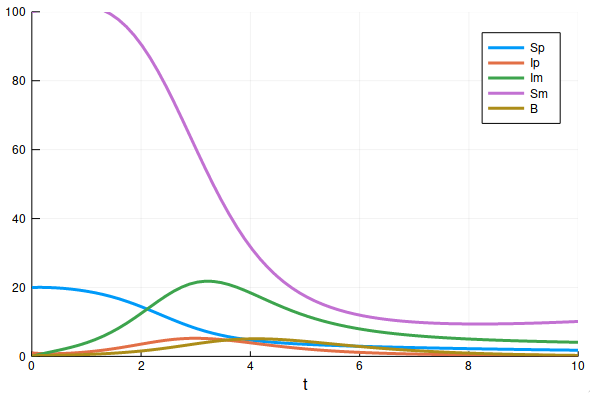

SemanticModels.jl: A Framework for Automatic Composition of Scientific Models Across Domains
Micah Halter 1
Micah.Halter@gtri.gatech.edu
Kun Cao1 James Fairbanks1
1 Georgia Tech Research Institute
Introduction
Scientific progress comes from adapting and extending models from prior work to address new problems. The task of modifying existing source code and performing semantically sound model fusion can be difficult as the models scale, and become more complex. We propose SemanticModels.jl, a category theory-based framework for defining meta-modeling tasks and semantic information extraction. Our objectives are threefold:
- Convert scientific models to a universal wiring diagram representation (Fong 2018);
- Use this representation to augment and compose these models at domain-level semantics;
- Generate executable code and visualize results.
Methods
We leveraged techniques from static and dynamic program analysis to process executable versions of scientific models to extract the mathematical representation of the Lotka-Volterra Predator-Prey (Volterra 1926) and the MacDonald Ross Disease Model (Smith 2012). Next we performed meta-modeling tasks defined as domain specific transformations to augment and compose the two models. Finally, we can visualize the new model as well as generate executable code and visualize the simulation’s results.
Results
Figures 2 and 3 show the universal, domain specific wiring diagrams that domain scientists can manipulate to create new models. Figure 3 also illustrates the amount of math that is contained in the simple Malaria wiring diagram. These wiring diagrams allow us to perform model augmentation and fusion at the semantic level, and the fusion of the differential equations is handled automatically. We then augmented the Lotka-Volterra model from Figure 2 to model mutual predation and composed it with the Ross Malaria model from Figure 3 to get a model that simulates both, shown in Figure 4. Finally we generated the code to simulate the new model, and the results are shown in Figures 5 and 6.

Figure 1: The full set of differential equations of the Lotka-Volterra model that we want to represent as a mathematical structure grounded in semantic knowledge.

Figure 2: Top: Lotka-Volterra predator-prey model represented as a semantically rich wiring diagram;
Bottom: Lotka-Volterra Predator-Prey Model represented as a structured mathematical object

Figure 3: Left: Ross Malaria model represented as a wiring diagram;
Right: The full set of differential equations represented by the wiring diagram on the left.

Figure 4: Top: The generated Lotka-Volterra and Malaria disease spread model as a wiring diagram;
Bottom: The generated Lotka-Volterra and Malaria disease spread model as a mathematical structure.

Figure 5: The results of the mutual predation and Malaria model showing the predator-prey interaction between the mosquitoes and birds (purple and yellow lines respectively)

Figure 6: Zooming into the beginning of the graph in Figure 5 shows the initial role Malaria had on the system.
Conclusions
SemanticModels.jlprovides a framework for scientists to easily augment and transform existing scientific models.- Using a universal representation allows for models to be easily composed across scientific domains.
- New models can automatically generate executable code and produce verifiable results.
- Our representation can be adapted to curate more types of models that can then be used in the same workflow.
Acknowledgments
This material is based upon work supported by the Defense Advanced Research Projects Agency (DARPA) under Agreement No. HR00111990008.
References
Fong, Brendan. 2018. “Seven Sketches in Compositionality: An Invitation to Applied Category Theory.”
Smith, Katherine E. AND Hay, David L. AND Battle. 2012. “Ross, Macdonald, and a Theory for the Dynamics and Control of Mosquito-Transmitted Pathogens.” PLOS Pathogens 8 (4): 1–13. https://doi.org/10.1371/journal.ppat.1002588.
Volterra, Vito. 1926. “Variazioni E Fluttuazioni Del Numero d’individui in Specie Animali Conviventi.” Memoria Della Reale Accademia Nazionale Dei Lincei. Ser. VI, Vol. 2.